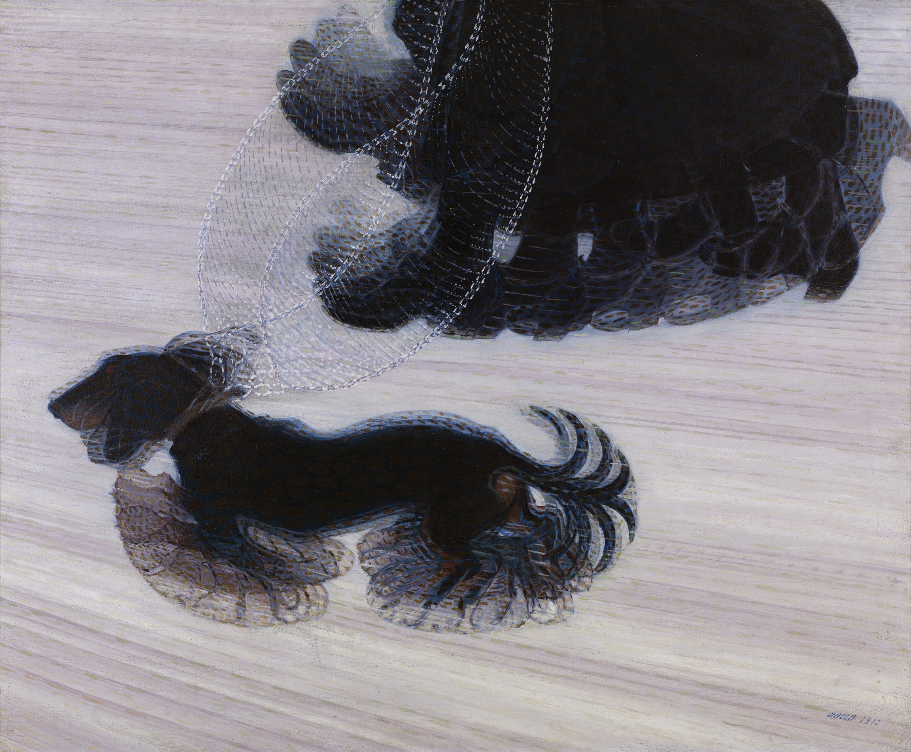
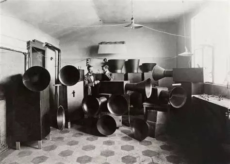

Have a look at the painting of Gioccomo Balla Dynamism of a Dog on a Leash below. You could say that Balla did not paint the dog, but what the dog did.

One of the challenges the futurists faced was to display speed and movement on a static image. You can find all kind of other examples of this same struggle online.
Add your own work to this struggle. Make a small work that makes speed and acceleration visible – or at least perceptible. Make one static image or a short of at most thirty seconds.
As we have seen, Marinetti states that "a roaring motor car which seems to run on machine-gun fire, is more beautiful than the Victory of Samothrace" (un automobile ruggente, che sembra correre sulla mitraglia, è più bello della Vittoria di Samotracia). If that is the case, he would have thought the contemporary busy city the epitome of beauty.
Another interesting example in this case are the noise-machines by Russolo.

Go on the street and record motors and machines. Make a short sound composition (a maximum of sixty seconds) of these recordings. Next reflect on the question whether noise is always just disturbance or that it can also become aesthetic material.
One of the key movements of the futurists is that they want to destroy museums and more classical art. They really looked for an active participation of the public and destroy the distance between art and life. In the tactile movement, Marinetti added the bodily perception to the artworks. In the case of interactive art, the public becomes a fundamental part of the work – going from passive spectator to active participant.
Have a look at Legible City from Jeffrey Shaw, and at Glowing Nature from Studio Roosegaarde. In both these cases (and there are many more of course) the work only works if someone interacts with it.
How do you view the role of the public in your own artistic practice? Does your work work (or exist) without participation?
Design an interactive form of a passive work (e.g. a painting or a building). Think about adding sensors and electronics in order to make the public a real participant. Make sure that the final result only exists through active participation.
You don't have to actually make the work. A nice and descriptive (technical) sketch of your design will suffice.
The futurists were very positive about industry and progress; they really thought that technology and speed would save us. However, after the catastrophes at the beginning of the previous century, efficiency, realism and seriousness came in a bad light. If this is rational civilization, the argument went, perhaps nonsense makes more sense.
This led to a lot of sociological and cultural changes – think about the hippies and related counter-culture of the 1960's. You can track a movement from e.g. dadaism to fluxus.
There has been a famous Dutch reaction to the fluxus movement, called a-dynamic art. One of the most famous proponents of this movement is the dutch artist Wim T. Schippers. He took up the challenge posed by dadaism by stating that perhaps the whole distinction between serious and absurd is itself absurd.
Have a look at one of his artworks from early in his career, that you can find below. It consists of him pouring a glass of lemonade in the North Sea; it is a bit overexposed and the comment is in Dutch, but you'll get the gist...
Reflect on the question whether absurdity can actually create meaning. How does this relate to the other forms of meaning-creation that we have seen during this module?
Write a very concrete instruction to change some mundane activity into an artwork, e.g. opening a door, combing your hair of making your bed. Now ask someone to perform that activity. Make a some kind of registration of this in such a way that you could display it on some festival.
Make a small overview of the different worldviews we have discussed, focussing on the question in what way technology helps to create meaning.